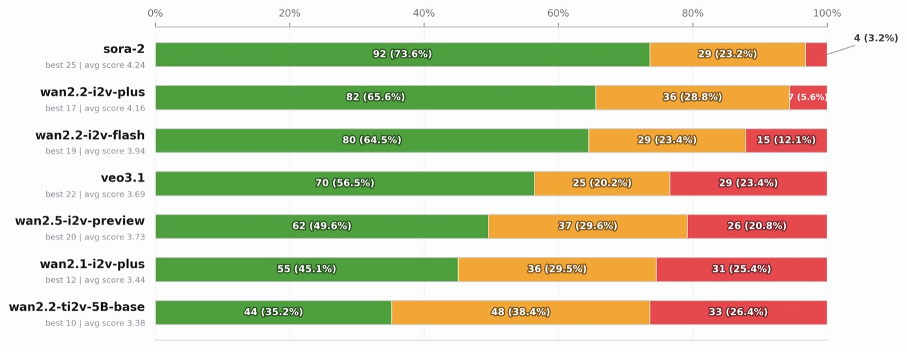
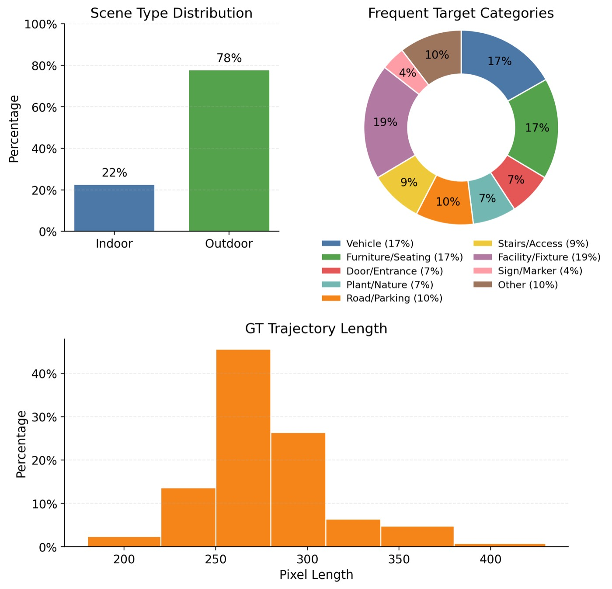

WorldMAP: 생성적 월드 모델로 부트스트래핑하는 VLN 궤적 예측 (Core Methods Analysis)
1. 개요 (Overview)
1.1 출판 정보 (Publication Information)
- 논문 제목 (Paper Title): WorldMAP: Bootstrapping Vision-Language Navigation Trajectory Prediction with Generative World Models
- 저자 (Authors): Hongjin Chen, Shangyun Jiang, Tonghua Su, Chen Gao, Xinlei Chen, Yong Li, Zhibo Chen
- 소속 (Affiliation): 중국 연구기관 (Tsinghua University / 정확한 소속 미명시)
- 발표처 (Published): arXiv 프리프린트 (2026년 4월 9일)
- DOI: 미확인
- arXiv: https://arxiv.org/abs/2604.07957
1.2 연구 목표 (Research Objective)
WorldMAP은 시각-언어 내비게이션(VLN)에서 단일 자기중심 이미지(egocentric image)로부터 신뢰할 수 있는 궤적을 예측하는 문제를 다룬다. 기존 VLM(Vision-Language Model) 기반 방법들은 직접 궤적을 생성할 때 불안정한 예측을 보이고, 생성적 월드 모델(world model)은 그럴듯한 미래를 합성할 수 있지만 기하학적으로 근거가 없는(geometrically ungrounded) 궤적을 만들어 내는 한계가 있다.
이 논문의 핵심 질문은: "생성된 미래(generated futures)가 어떻게 근거 있는 궤적 학습을 위한 지도(supervision)가 될 수 있는가?"이다. WorldMAP은 월드 모델을 직접적인 행동 예측기가 아닌, 구조화된 훈련 지도 신호를 합성하는 교사(teacher)로 활용한다는 새로운 관점을 제시한다.
2. 문제 정의 (Problem Definition)
2.1 도전과제 (Challenges)
A. 단일 관찰에서의 궤적 불안정성
VLM을 직접 궤적 예측기로 사용할 때의 근본적 한계:
관찰(O) = 단일 자기중심 이미지 + 텍스트 지시
예측(Ŷ) = VLM이 생성한 웨이포인트 시퀀스
문제: |Ŷ - Y*| >> 허용 오차
VLM은 언어적 지식과 시각적 이해는 탁월하지만, 3D 공간 기하학에 대한 이해가 부족하여 실제 환경에서 실행 불가능한 궤적을 생성하는 경향이 있다.
B. 월드 모델의 기하학적 비근거성
생성적 월드 모델이 만드는 미래 시각 시퀀스:
월드 모델 출력: {v_1, v_2, ..., v_T} (미래 비디오 프레임)
문제: 시각적으로는 그럴듯하지만 실제 공간 기하학과 불일치
결과: 직접적인 내비게이션 신호로 사용 불가
단안 깊이 추정(monocular depth estimation)의 스케일 모호성, 카메라 포즈 불확실성 등이 복합적으로 작용하여 월드 모델 생성 결과를 네비게이션에 직접 활용하기 어렵다.
C. 실제 내비게이션 레이블의 희소성
실제 환경에서 수집된 목표 지향 내비게이션 궤적 데이터는:
- 획득 비용이 높음
- 환경 다양성 부족
- 장면별 편향(scene-specific bias) 존재
이러한 데이터 희소성 문제를 월드 모델의 상상력으로 보완하는 것이 WorldMAP의 핵심 전략이다.
2.2 핵심 해결책
WorldMAP은 Teacher-Student 증류 프레임워크(distillation framework)를 통해 세 가지 문제를 동시에 해결한다:
- 교사(Teacher): 생성된 비디오 시퀀스를 3D 재구성 → 의미론적 분할 → 비용 맵 계획으로 변환하여 의사 레이블(pseudo-label) 생성
- 학생(Student): 경량화된 멀티모달 모델이 단일 관찰만으로 직접 궤적 예측
- 증류(Distillation): GT 레이블 + 교사 의사 레이블의 조합으로 학생 훈련
3. 핵심 방법론 (Core Methods)
3.1 World Construction Module (월드 구성 모듈)
입력: 단일 자기중심 이미지 + 텍스트 지시 + 복수의 월드 모델 비디오 미래
처리 파이프라인:
단계 1: 미래 비디오 생성
입력 이미지 + 지시
↓
월드 모델 (복수 스트림)
↓
{V^(1), V^(2), ..., V^(M)} M개의 미래 비디오
단계 2: 깊이 추정
각 프레임에 Depth Anything 3 (DA3) 적용
D^(m)_t = DA3(V^(m)_t) (각 프레임 t의 깊이 맵)
단계 3: 3D 재구성
(이미지, 깊이) → 3D 포인트 클라우드
모든 관찰 프레임 + 예측 프레임 통합
단계 4: 내비게이션 평면 추정
RANSAC 기반 지면 평면 피팅
수직 범위: [0.5m ~ 1.5m] 내의 포인트만 선택
내비게이션 평면 π 추정
단계 5: 의미론적-공간적 메모리 인코딩
재구성된 모든 프레임에서 의미 특징 추출
Memory M = {(f_i, p_i)} : (특징, 3D 위치) 쌍
핵심 혁신: 월드 모델의 여러 미래 비디오를 공유 내비게이션 평면으로 통합함으로써 시각적 다양성을 3D 기하학적 일관성으로 변환.
단안 깊이의 스케일 모호성(scale ambiguity) 처리:
스케일 정규화:
Z_normalized = Z_raw * (h_expected / h_measured)
여기서 h_expected: 알려진 카메라 높이
h_measured: 평면 피팅으로 추정된 카메라-지면 거리
3.2 Task-Aware Grounding Module (작업 인식 그라운딩 모듈)
목표: 다양한 미래 비디오에서 목표 객체와 장애물을 3D 공간에 위치시키기
입력: 의미론적-공간적 메모리 M + 작업 지시 I
단계 1: CLIP 기반 메모리 검색
관련성 점수: s_i = CLIP_sim(I, f_i)
상위 K개 프레임 선택: {f_top1, ..., f_topK}
단계 2: VLM 지시 요약
I_summary = VLM_summarize(I)
핵심 목표 객체 및 공간 관계 추출
단계 3: 오픈-어휘 분할 (UniPixel)
목표 마스크: M_target = UniPixel(f_i, I_summary)
장애물 마스크: M_obstacle = UniPixel(f_i, "obstacle_prompt")
단계 4: 멀티뷰 3D 융합
각 뷰의 마스크를 3D 공간으로 역투영(back-projection)
다중 뷰 투표로 3D 위치 확정
단계 5: BEV(Bird's Eye View) 투영
3D 포인트 → 내비게이션 평면 위 투영
해상도: 5mm/셀
결과: 목표 위치 map + 장애물 맵
다중 미래 뷰 앙상블의 이점:
- 단일 뷰 분할 오류 보정
- 폐색(occlusion)으로 가려진 영역 복원
- 장애물 위치 불확실성 감소
수식으로 표현하면:
BEV_final(x,y) = ∑_m w_m * BEV^(m)(x,y) / ∑_m w_m
여기서 w_m: m번째 미래의 신뢰도 가중치
3.3 Cost-Aware Planning Module (비용 인식 계획 모듈)
BEV 비용 맵 구성:
비용 맵 C(x,y):
- 목표 영역: 0 (비용 없음)
- 장애물 영역: ∞ (통과 불가)
- 미관찰 영역: c_unknown (보수적 비용, c_unknown > 0)
- 안전 마진: 장애물 주변 d_safe 반경 팽창
계획 알고리즘: Fast Marching Method (FMM)
φ(x,y) = 최단 시간 도달 함수
∇φ = 경사 방향이 최적 이동 방향
FMM 기반 의사 레이블 궤적 생성:
시작점: 자기중심 이미지의 카메라 위치
목표점: 3D 그라운딩된 목표 위치
FMM 실행:
U(x,y) = 비용 가중 최단 경로 도달 시간
τ = FMM_path(start, goal, C)
웨이포인트 리샘플링:
T개의 균등 간격 웨이포인트 추출
Y_pseudo = {y_1, y_2, ..., y_T} (2D 이미지 좌표)
FMM의 장점:
- 장애물 회피 자동 보장
- 연속적이고 부드러운 경로 생성
- 이미지 좌표 공간에서 직접 작동 가능
3.4 Student Model Architecture (학생 모델 아키텍처)
Multi-Hypothesis Trajectory Prediction:
학생 모델은 단일 이미지 + 텍스트로부터 K개의 궤적 가설을 동시에 예측:
입력: (O, I) = (자기중심 이미지, 텍스트 지시)
인코더: Qwen3-VL (4B 또는 8B)
비전 토큰: v = CLIP_encoder(O)
텍스트 토큰: t = tokenizer(I)
융합: h = Qwen3VL(concat(v, t))
다중 가설 디코더 (256-dim 히든 레이어):
{Ŷ^(1), ..., Ŷ^(K)} = Decoder(h)
각 Ŷ^(k) = {ŷ^(k)_1, ..., ŷ^(k)_T} T개 웨이포인트
신뢰도 점수: {c^(1), ..., c^(K)} = Conf_head(h)
최종 예측: Ŷ* = argmin_k L(Ŷ^(k), Y_GT) (학습 시)
또는 argmax_k c^(k) (추론 시)
손실 함수 (Multi-Hypothesis Loss):
ℒ^(k) = (1/T) Σ_{t=1}^{T} ||ŷ^(k)_t − y_t||_2 (웨이포인트 L2 손실)
+ (λ_d/T) Σ_{t=1}^{T} (1 − cos(Δŷ^(k)_t, Δy_t)) (방향 일관성 손실)
Δŷ^(k)_t = ŷ^(k)_{t+1} − ŷ^(k)_t (예측 세그먼트 벡터)
Δy_t = y_{t+1} − y_t (GT 세그먼트 벡터)
λ_d = 0.5 (방향 일관성 가중치)
Best-of-K 학습:
ℒ_total = min_k ℒ^(k) + ℒ_conf
ℒ_conf = -log(c^(k*)) (최적 가설의 신뢰도 극대화)
방향 일관성 손실의 역할:
기존 L2만 사용 시: 웨이포인트 위치는 맞지만 방향이 불연속
방향 손실 추가 후: 부드럽고 자연스러운 궤적 생성
cos(Δŷ, Δy) ∈ [-1, 1] → 손실 ∈ [0, 2]
4. 시스템 아키텍처 (System Architecture)

Figure: WorldMAP 전체 시스템 아키텍처 — Teacher-Student 프레임워크와 월드 모델 기반 맵 생성 파이프라인4.1 전체 파이프라인
┌──────────────────────────────────────────────────────────────────────┐
│ WORLDMAP FRAMEWORK │
│ │
│ ┌────────────────────────────┐ │
│ │ TEACHER (훈련 시) │ │
│ │ │ │
│ │ ┌──────────┐ │ │
│ │ │ 입력 이미지│──────────────┐│ │
│ │ │ + 텍스트 │ ││ │
│ │ └──────────┘ ↓│ │
│ │ ┌──────────────────────┐ │ │
│ │ │ 월드 모델 (M개 미래) │ │ │
│ │ │ {V^(1),...,V^(M)} │ │ │
│ │ └──────────────────────┘ │ │
│ │ ↓ │ │
│ │ ┌──────────────────────┐ │ │
│ │ │ Module 1: 3D 재구성 │ │ │
│ │ │ DA3 깊이 + RANSAC │ │ │
│ │ │ 내비게이션 평면 추정 │ │ │
│ │ └──────────────────────┘ │ │
│ │ ↓ │ │
│ │ ┌──────────────────────┐ │ │
│ │ │ Module 2: 의미론 그라 │ │ │
│ │ │ 운딩 (CLIP + UniPixel)│ │ │
│ │ │ 목표 + 장애물 BEV 맵 │ │ │
│ │ └──────────────────────┘ │ │
│ │ ↓ │ │
│ │ ┌──────────────────────┐ │ │
│ │ │ Module 3: FMM 계획 │ │ │
│ │ │ 비용 맵 → 의사 레이블 │ │ │
│ │ │ Y_pseudo │ │ │
│ │ └──────────────────────┘ │ │
│ └────────────────────────────────────── ┤ │
│ │ │ │
│ Y_pseudo + Y_GT │ │
│ ↓ │ │
│ ┌─────────────────────────────────────────────────────────────────┐ │
│ │ STUDENT (훈련 + 추론) │ │
│ │ │ │
│ │ 입력 이미지 + 텍스트 │ │
│ │ ↓ │ │
│ │ Qwen3-VL 인코더 (4B/8B) │ │
│ │ ↓ │ │
│ │ 다중 가설 디코더 → {Ŷ^(1), ..., Ŷ^(K)} + {c^(1), ..., c^(K)} │ │
│ │ ↓ (추론 시) │ │
│ │ 최고 신뢰도 가설 선택 → 최종 궤적 Ŷ* │ │
│ └─────────────────────────────────────────────────────────────────┘ │
└──────────────────────────────────────────────────────────────────────┘
4.2 데이터 흐름 설명
학습 단계:
- 각 훈련 샘플 (O, I, Y_GT) 준비
- 교사 모듈이 (O, I) → Y_pseudo 생성 (오프라인 사전 계산 가능)
- 학생 모델 입력: (O, I)
- 손실 계산: min_k [L2_loss(Ŷ^(k), Y_GT) + L2_loss(Ŷ^(k), Y_pseudo)] * 가중치
- 역전파 및 파라미터 업데이트 (LoRA 어댑터만)
추론 단계 (월드 모델 불필요):
- 입력: (O, I)
- Qwen3-VL 인코더 → 특징 추출
- 다중 가설 디코더 → K개 궤적 후보
- 신뢰도 점수 → 최적 궤적 선택
- 출력: 웨이포인트 시퀀스
5. 실험 결과 및 성능 (Experimental Results)

Figure: WorldMAP 실험 결과 — Target-Bench 및 다양한 실내/실외 환경에서의 내비게이션 성공률 비교5.1 데이터셋 (Datasets)
Target-Bench:
- 실내/실외 혼합 실제 환경
- 의미론적 내비게이션 목표 (지정된 대상까지 이동)
- 자기중심 RGB 이미지 + 텍스트 지시
- 2D 투영 이미지 좌표 공간에서 평가
훈련 데이터 증강:
- GT 궤적 레이블
- 교사 생성 의사 레이블 (GT의 약 2-3배 데이터 증폭 효과)
5.2 평가 지표 (Evaluation Metrics)
| 지표 | 설명 | 방향 |
|---|---|---|
| ADE (Average Displacement Error) | 각 타임스텝별 예측-GT 궤적의 평균 거리 | ↓ 낮을수록 좋음 |
| FDE (Final Displacement Error) | 최종 웨이포인트(목표 지점)의 도달 오차 | ↓ 낮을수록 좋음 |
| DTWnorm (Normalized Dynamic Time Warping) | 시간 왜곡을 허용한 궤적 정렬 지표 | ↓ 낮을수록 좋음 |
ADE vs FDE의 의미:
- ADE: 전체 경로 품질 (중간 과정이 얼마나 올바른가)
- FDE: 목표 도달 정확도 (가장 중요한 내비게이션 지표)
- DTW: 시간적 순서 일관성
5.3 정량적 결과 (Quantitative Results)
메인 결과 비교 (Target-Bench)
| 방법 | 모델 규모 | ADE ↓ | FDE ↓ | DTWnorm ↓ |
|---|---|---|---|---|
| 독점 VLM 기준선 | ||||
| GPT-5.4 | 대규모 | 51.27 | 67.19 | 31.63 |
| o3 (OpenAI) | 대규모 | > GPT-5.4 | > GPT-5.4 | - |
| Gemini-3-Pro | 대규모 | ~51 | ~67 | ~31 |
| 오픈소스 VLM 기준선 | ||||
| Qwen3-VL-4B | 4B | 183.93 | 339.58 | 177.33 |
| Qwen3-VL-8B | 8B | ~160 | ~290 | ~150 |
| Qwen3-VL-32B | 32B | ~140 | ~250 | ~120 |
| InternVL3-14B | 14B | ~150 | ~270 | ~130 |
| 월드 모델 증강 | ||||
| MindJourney† | 대규모 | 152.41 | 250.17 | 84.84 |
| WorldMAP (제안) | ||||
| WorldMAP (4B 백본) | 4B | 45.07 | 42.84 | 33.56 |
| WorldMAP (8B 백본) | 8B | 42.06 | 38.87 | 31.95 |
†MindJourney: 테스트 타임에 SVC 계획기와 월드 모델 결합
핵심 성과:
- GPT-5.4 대비 ADE 18.0% ↓, FDE 42.1% ↓
- 오픈소스 8B 모델이 독점 대형 모델 성능 초과
- MindJourney 대비 ADE 72.4% ↓ (152.41 → 42.06)
훈련 지도 구성 절제 실험
| 지도 신호 구성 | ADE ↓ | 해석 |
|---|---|---|
| GT 레이블만 | 78.34 | 데이터 희소성으로 과적합 |
| GT + 월드 모델 의사 레이블 | 42.06 | 최적 조합 |
| 월드 모델 의사 레이블만 | 95.98 | 기하학적 불확실성 누적 |
핵심 통찰: GT와 의사 레이블의 조합이 각각보다 월등히 우수 → 월드 모델의 가치는 독립 지도 신호가 아닌 GT 보완 신호에 있음.
백본 크기 절제 실험
| 백본 | 파라미터 수 | ADE ↓ | FDE ↓ | DTWnorm ↓ |
|---|---|---|---|---|
| Qwen3-VL-4B | 4B | 45.07 | 42.84 | 33.56 |
| Qwen3-VL-8B | 8B | 42.06 | 38.87 | 31.95 |
크기 증가에 따른 일관된 성능 향상 확인.
5.4 리얼월드 실험 (Real-world Experiments)
논문에서의 실제 로봇 배치:
- Target-Bench 자체가 실내/실외 실제 환경 기반 데이터셋으로 구성됨
- 그러나 물리적 로봇에서의 폐루프(closed-loop) 실험은 명시적으로 보고되지 않음
- 시뮬레이터 기반 벤치마크가 아닌 실제 캡처된 비디오 데이터를 사용한 평가
제한사항: 로봇이 실제로 예측 궤적을 실행하는 하드웨어 실험 없음. 이미지 좌표 공간에서의 궤적 품질 평가에 국한.
6. 핵심 기여점 (Key Contributions)
6.1 월드 모델의 역할 재정의
기존 인식: 월드 모델 = 테스트 타임 내비게이션 가이드 WorldMAP의 통찰: 월드 모델 = 훈련 시 구조화된 지도 신호 합성기
기존 접근 (MindJourney 등):
입력 → 월드 모델 → 미래 합성 → 계획 → 행동
(테스트 타임에 월드 모델 필요 → 지연 + 비용)
WorldMAP 접근:
[학습 시] 월드 모델 → 의사 레이블 → 학생 모델 학습
[추론 시] 입력 → 학생 모델 → 즉시 궤적 예측
(테스트 타임에 월드 모델 불필요 → 실시간 성능)
6.2 3단계 교사 파이프라인
| 단계 | 기술 | 기여 |
|---|---|---|
| World Construction | DA3 깊이 + RANSAC 내비게이션 평면 | 시각 → 3D 기하학 |
| Task-Aware Grounding | CLIP 검색 + UniPixel 분할 | 의미론 → 공간 위치 |
| Cost-Aware Planning | FMM 알고리즘 | 기하학 → 실행 가능 궤적 |
6.3 경량 학생 디코더
256차원 숨겨진 레이어만으로 구현된 컴팩트 디코더:
- 파라미터 효율적
- 추론 오버헤드 최소화
- LoRA 미세조정으로 기반 VLM 능력 보존
6.4 방향 일관성 손실
웨이포인트 위치 정확도와 궤적 부드러움을 동시에 최적화하는 이중 목적 손실 함수 설계.
6.5 오픈소스-독점 격차 해소
8B 오픈소스 모델이 독점 대형 모델(GPT-5.4, Gemini-3-Pro)의 성능을 초과하는 것을 최초로 시연.
7. 구현 상세 (Implementation Details)
7.1 하이퍼파라미터
| 파라미터 | 값 | 설명 |
|---|---|---|
| λ_d | 0.5 | 방향 일관성 가중치 |
| BEV 해상도 | 5mm/셀 | 내비게이션 맵 세밀도 |
| 수직 밴드 범위 | [0.5m, 1.5m] | 내비게이션 평면 포인트 선택 범위 |
| 배치 크기 | 64 | 훈련 배치 |
| 에포크 수 | 100 | 총 훈련 반복 |
| 학습률 | 5×10⁻⁴ | AdamW 옵티마이저 |
| 학습률 스케줄 | 코사인 어닐링 | 학습 안정화 |
7.2 학습 설정
- 최적화기: AdamW
- 파인튜닝 방식: LoRA 어댑터 (기반 VLM 파라미터 동결)
- 하드웨어: 4× NVIDIA A100 80GB GPU
- 정밀도: FP16 또는 BF16 (A100 지원)
7.3 주요 외부 컴포넌트
| 컴포넌트 | 모델/라이브러리 | 역할 |
|---|---|---|
| 깊이 추정 | Depth Anything 3 (DA3) | 단안 깊이 → 3D 재구성 |
| 의미론적 분할 | UniPixel | 오픈-어휘 분할 |
| 의미론적 검색 | CLIP | 관련 메모리 프레임 검색 |
| 궤적 계획 | Fast Marching Method | 비용 맵 → 경로 계획 |
| 지면 추정 | RANSAC | 내비게이션 평면 피팅 |
| VLM 백본 | Qwen3-VL (4B/8B) | 비전-언어 인코딩 |
7.4 추론 시 계산 복잡도
교사 모듈 (학습 시만 필요):
- 월드 모델 생성: O(M * T * 비디오생성비용)
- DA3 깊이 추정: O(M * T * H * W)
- FMM 계획: O(H * W * log(H*W))
학생 모델 (추론 시):
- Qwen3-VL 인코딩: O(n_token)
- 디코더: O(K * T * 256)
- 총 추론 시간: ~실시간 (VLM 추론 지배)
8. 고급 주제 (Advanced Topics)
8.1 Teacher-Student 증류의 이론적 배경
Knowledge Distillation (Hinton et al., 2015)의 내비게이션 특화 확장:
기존 KD: 소프트 레이블 전달 (soft labels)
WorldMAP의 KD: 구조화된 계획 지도 전달 (structured plan supervision)
차이점:
- 전통적 KD: 교사-학생이 같은 입력/출력 공간
- WorldMAP: 교사는 월드 모델 비디오를, 학생은 단일 이미지를 입력
- 지도 신호가 분류 확률이 아닌 기하학적으로 근거 있는 궤적
8.2 월드 모델의 다양성 활용
M개의 서로 다른 미래 시나리오를 생성하고 앙상블:
- 단일 미래의 분할 오류나 깊이 추정 오류 보정
- 불확실한 영역에 대한 보수적 추정 가능
- 다양한 이동 경로 후보 생성 → FMM이 가장 안전한 경로 선택
8.3 확장성 분석
더 큰 백본:
- 4B → 8B 전환 시 일관된 성능 향상
- 32B 이상의 백본 실험 결과 명시되지 않음 (계산 비용 제약 추정)
더 많은 미래 생성:
- M이 클수록 더 정확한 3D 재구성 가능하지만 계산 비용 선형 증가
- 최적 M 값 탐색 실험 미수행 (향후 과제)
다른 환경 유형:
- 현재 Target-Bench (실내/실외 혼합)에서만 평가
- 실외 대규모 환경(도시 내비게이션), 동적 장애물 환경으로의 일반화 미검증
8.4 한계점
A. 코드 비공개
현재 공개된 코드 저장소 없음. 재현 불가능성이 학계 채택에 장벽.
B. 단일 이미지 입력의 근본적 모호성
단일 자기중심 이미지만으로 전체 환경 구조 추론의 한계:
- 가려진 목표물 처리 불가
- 긴 복도, 방의 연속 구조 파악 어려움
- VLN 커뮤니티에서 선호하는 시간 순서 이미지 입력 미활용
C. 폐루프 실행 미검증
실제 로봇에서 예측 궤적을 실행하는 실험 없음. 궤적 품질이 실제 내비게이션 성공률로 이어지는지 불명확.
D. Target-Bench 단일 벤치마크
VLN 커뮤니티 표준 벤치마크 (R2R, RxR, REVERIE 등) 미활용. 결과의 일반화 가능성 의문.
E. 월드 모델 의존성
훈련 시 월드 모델이 필요하여 훈련 비용 증가. 오프라인 사전 계산 가능하지만 저장 공간 문제.
9. 비교 분석 (Comparative Analysis)
9.1 기존 리뷰 논문과의 비교
| 특성 | WMNav (IROS'25) | StreamVLN (ICRA'26) | NavDP (ICRA'26) | ReasonNav (CoRL'25) | WorldMAP (arxiv'26) |
|---|---|---|---|---|---|
| 핵심 접근 | World Model + ObjectNav | SlowFast 컨텍스트 | Diffusion Policy | Chain-of-Thought | Teacher-Student 증류 |
| 입력 | 파노라마 RGB-D | 스트리밍 비디오 | RGB-D (단일) | 이미지 + 언어 | 단일 자기중심 이미지 |
| 월드 모델 활용 | 테스트 타임 계획 | ❌ | ❌ | ❌ | 훈련 시 지도 신호 |
| 코드 공개 | ✅ GitHub | ✅ | ✅ GitHub | ✅ | ❌ |
| 실제 로봇 | ❌ (시뮬레이터) | ✅ (실제 로봇) | ✅ (실제 로봇) | ❌ | ❌ |
| 표준 벤치마크 | HM3D, MP3D | R2R-CE, RxR-CE | PointNav 등 | R2R | Target-Bench (비표준) |
| 언어 지시 | 목표 객체 카테고리 | 자연어 지시 | 이미지 목표 | 자연어 지시 | 자연어 지시 |
9.2 장단점 분석
WorldMAP의 강점
1. 혁신적인 지도 신호 패러다임 기존 VLN 방법들이 GT 레이블이나 단순한 데이터 증강에 의존하는 데 반해, WorldMAP은 생성 모델의 상상력을 구조화된 계획 지도로 변환한다는 새로운 패러다임 제시. WMNav나 StreamVLN이 월드 모델을 추론 시 직접 사용하는 것과 대조적.
2. 추론 효율성 Teacher-Student 구조 덕분에 추론 시 월드 모델 불필요:
MindJourney: 추론 = VLM + 월드 모델 + SVC 계획
WorldMAP: 추론 = Qwen3-VL + 경량 디코더
지연 시간과 계산 비용 대폭 절감.
3. 오픈소스-독점 격차 해소 8B 오픈소스 모델이 GPT-5.4 수준의 성능 달성. 실제 로봇 배포 시 API 비용 절감 가능성.
WorldMAP의 약점 (기존 리뷰 논문 대비)
1. 실제 로봇 검증 부재 VR-Robo (RA-L'25), StreamVLN (ICRA'26), NavDP (ICRA'26) 모두 실제 로봇에서 검증됨. WorldMAP은 데이터셋 평가에 그침.
2. 표준 벤치마크 회피 R2R, RxR 같은 VLN 커뮤니티 표준 벤치마크 미사용. 공정한 비교 어려움.
- WMNav: HM3D, MP3D에서 SOTA
- StreamVLN: R2R-CE, RxR-CE에서 SOTA
- WorldMAP: Target-Bench에서만 평가 (커뮤니티 인지도 낮음)
3. 코드 비공개 WMNav, StreamVLN, NavDP 모두 코드 공개. WorldMAP은 미공개로 재현 불가.
9.3 실적용 가능성 평가
| 항목 | 점수 (5점 만점) | 이유 |
|---|---|---|
| 실시간 성능 | ⭐⭐⭐⭐ | 추론 시 월드 모델 불필요 |
| 실제 로봇 적용 가능성 | ⭐⭐⭐ | 하드웨어 검증 없음, 폐루프 실행 미확인 |
| 환경 일반화 | ⭐⭐⭐ | 단일 비표준 벤치마크 |
| 확장성 | ⭐⭐⭐⭐ | 더 큰 백본으로 성능 향상 가능 |
| 배포 편의성 | ⭐⭐⭐ | 코드 미공개 |
9.4 연구 방향성 평가
WorldMAP이 제시하는 연구 방향의 가치:
생성 모델을 훈련 데이터 합성 도구로 활용: LLM/VLM 분야에서 이미 검증된 패러다임(합성 데이터 생성)을 VLN에 적용. 장기적으로 유망한 방향.
월드 모델의 내비게이션 활용 재정의: 기존 방법들이 월드 모델을 추론 시 사용하는 데 반해, 훈련 시 구조화된 지도 생성에 사용한다는 새로운 프레임 제시.
의문: 왜 VLN 표준 벤치마크가 아닌 Target-Bench를 사용했는가? 표준 벤치마크에서 성능이 좋지 않을 가능성 있음. 향후 R2R/RxR 결과 확인 필요.
기존 리뷰 논문들과의 방향성 차이:
- WMNav: 월드 모델 + 제로샷 ObjectNav → 환경 탐색 특화
- StreamVLN: 긴 경로 + 스트리밍 처리 → 실시간성 특화
- NavDP: 확산 모델 + 심-투-리얼 → 실제 배포 특화
- WorldMAP: 생성 지도 + Teacher-Student → 데이터 효율성 특화 (새로운 틈새 영역)
10. 참고 문헌 (References)
- Chen et al., "WorldMAP: Bootstrapping Vision-Language Navigation Trajectory Prediction with Generative World Models," arXiv:2604.07957, 2026.
- Yang et al., "Depth Anything v3 (DA3)," arXiv, 2025.
- Li et al., "UniPixel: Open-Vocabulary Dense Prediction," arXiv, 2025.
- Team, "Qwen3-VL Technical Report," Alibaba Cloud, 2026.
- Radford et al., "Learning Transferable Visual Models From Natural Language Supervision (CLIP)," ICML 2021.
- Sethian, "Level Set Methods and Fast Marching Methods," Cambridge University Press, 1999.
- Anderson et al., "Vision-and-Language Navigation: Interpreting Visually-Grounded Navigation Instructions in Real Environments," CVPR 2018.
- Ku et al., "Room-Across-Room: Multilingual Vision-and-Language Navigation with Dense Spatiotemporal Grounding," EMNLP 2020.
- Hinton et al., "Distilling the Knowledge in a Neural Network," NIPS Deep Learning Workshop 2015.
- Ha & Schmidhuber, "World Models," arXiv:1803.10122, 2018.
- Nie et al., "WMNav: Integrating Vision-Language Models into World Models for Object Goal Navigation," IROS 2025.
- Wei et al., "StreamVLN: Streaming Vision-and-Language Navigation via SlowFast Context Modeling," ICRA 2026.
- Cai et al., "NavDP: Learning Sim-to-Real Navigation Diffusion Policy," ICRA 2026.
- Chen et al., "WorldMAP 관련 월드 모델: MindJourney, NavMorph, DreamWalker," 참고 문헌 목록에서 확인.
11. 결론 (Conclusion)
혁신성
WorldMAP은 생성적 월드 모델의 역할을 추론 도구에서 훈련 지도 신호 합성기로 재정의한다는 점에서 개념적 혁신성이 뚜렷하다. 단순히 월드 모델에서 생성된 미래를 내비게이션에 직접 사용하는 기존 방법과 달리, 3D 재구성 → 의미론적 그라운딩 → FMM 계획의 파이프라인으로 생성 결과를 기하학적으로 근거 있는 의사 레이블로 변환하는 체계적 접근이 인상적이다.
특히 GT + 월드 모델 의사 레이블 조합이 각각보다 월등히 우수하다는 절제 실험 결과는 이 접근법의 핵심 통찰을 실증적으로 지지한다.
실용적 의의
오픈소스 8B 모델이 독점 대형 모델(GPT-5.4, Gemini-3-Pro)을 앞서는 결과는 실제 로봇 배포 관점에서 의미 있다. API 비용 없이 엣지 디바이스에서 실행 가능한 경량 학생 모델은 실용적 내비게이션 시스템의 요건에 부합한다.
그러나 표준 VLN 벤치마크 결과 부재와 실제 로봇 실험 미수행은 이 방법론의 실제 내비게이션 역량에 대한 의문을 남긴다. Target-Bench가 VLN 커뮤니티에서 얼마나 인정받는지에 따라 이 논문의 영향력이 결정될 것이다.
향후 연구 방향
- R2R/RxR/REVERIE 등 표준 벤치마크에서의 검증 (최우선 과제)
- 실제 로봇에서의 폐루프 실행 (CityWalker, VR-Robo 방식 참조)
- 코드 공개 (커뮤니티 채택 가속화)
- 더 효율적인 교사 모듈 (월드 모델 없이도 의사 레이블 생성 가능한가?)
- 다중 타임스텝 입력 지원 (단일 이미지의 모호성 한계 극복)
- 동적 장애물 처리 (현재 정적 환경 가정)
WorldMAP은 VLN에서 데이터 효율성과 오픈소스 모델 역량 강화라는 중요한 방향을 개척하고 있으며, 표준 벤치마크 검증과 코드 공개가 이루어진다면 커뮤니티에 상당한 영향을 미칠 잠재력이 있다.
12. 심화 분석: 관련 연구 심층 비교 (Extended Related Work Analysis)
12.1 VLN 궤적 예측 방법론 계보
VLN에서 궤적 예측은 크게 세 가지 패러다임으로 발전해왔다:
패러다임 1: 명시적 그래프 기반 방법
입력: 파노라마 이미지 + 언어 지시
처리:
1. 뷰 그래프 구성 (연결된 위치들의 그래프)
2. 각 노드에서 언어-이미지 매칭 점수 계산
3. 그래프 탐색 (예: Beam Search, DAGGER)
4. 최고 점수 노드 시퀀스 = 예측 경로
대표 논문:
- R2R-VLN (Anderson et al., 2018)
- PREVALENT (Hao et al., 2020)
- VLN-BERT (Hong et al., 2021)
장점: 명시적 연결 구조 → 해석 가능
단점: 사전 구성된 그래프에 의존 → 새로운 환경 일반화 어려움
패러다임 2: 직접 VLM 프롬프팅
입력: 이미지 + 언어 → VLM 직접 호출
처리:
GPT-4o/Gemini → "Turn left, go forward 3 steps, ..."
텍스트 명령 → 로봇 동작 변환
대표 논문:
- WayPoint (Shah et al., 2023)
- InstructNav (Mu et al., 2024)
- NavGPT (Yu et al., 2023)
장점: 학습 없이 즉시 사용 가능
단점: 불안정한 예측, 3D 공간 이해 부족
(WorldMAP이 해결하려는 핵심 문제)
패러다임 3: 학습 기반 궤적 예측 (World Model 활용)
WorldMAP이 속하는 패러다임:
이전 방법들:
- MindJourney: 테스트 타임에 월드 모델 + SVC 계획
- PathDreamer: 시뮬레이션 기반 경로 시각화
- NavMorph: 환경 변형 기반 내비게이션
WorldMAP의 혁신:
월드 모델 → 훈련 시 의사 레이블 생성
→ 경량 학생 모델 → 실시간 배포
12.2 Knowledge Distillation 이론과의 연결
WorldMAP은 교육학적 AI(pedagogical AI) 관점에서 분석 가능:
기존 KD (Hinton et al., 2015):
교사 모델: 큰 네트워크 (예: BERT-large)
학생 모델: 작은 네트워크 (예: BERT-small)
전달: 소프트 레이블 (클래스 확률 분포)
WorldMAP의 차이점:
교사 모델: 월드 모델 비디오 합성 파이프라인 (오프라인)
학생 모델: Qwen3-VL + 경량 디코더
전달: 기하학적으로 근거 있는 궤적 의사 레이블
핵심 차이:
기존 KD: 같은 입력 공간에서 확률 분포 전달
WorldMAP: 다른 입력 공간 (비디오 vs 이미지)에서 구조적 지식 전달
상호 정보 관점:
I(Y_GT ; Y_pseudo) > 0 (GT와 의사 레이블 사이의 상호 정보)
교사가 추가하는 정보:
- 공간 기하학 (3D 재구성)
- 의미론적 위치 (목표 객체 위치)
- 물리적 제약 (FMM으로 장애물 회피)
수식적 목표:
arg min_{θ} E[ℒ(f_θ(O,I), Y_GT)] + λ * E[ℒ(f_θ(O,I), Y_pseudo)]
≈ arg min_{θ} E_{X~(GT∪pseudo)}[ℒ(f_θ(O,I), X)]
(데이터 증강의 특수한 형태)
12.3 Fast Marching Method 심층 분석
WorldMAP의 계획 핵심 알고리즘인 FMM의 이론적 배경:
원래 HJ PDE (Eikonal 방정식):
|∇T(x)| = 1/F(x)
여기서:
T(x): x에 도달하는 최소 시간
F(x): x에서의 속도 (비용의 역수)
BEV 비용 맵에서:
F(x,y) = 1/C(x,y)
C(x,y): 비용 맵 값 (장애물: ∞, 목표: 0, 미지: c_unknown)
FMM 구현 (Dijkstra 기반):
1. 목표 지점을 T=0으로 초기화
2. Priority queue로 T 값이 작은 순서부터 처리
3. 각 셀에서 이웃 셀의 T 값 업데이트:
T_new = T_current + C(neighbor) * d(step)
4. 모든 셀 처리 완료 = 최단 비용 경로 필드 완성
역방향 추적:
시작점에서 ∇T 방향의 역방향 따라가기
= 목표까지의 최적 경로
시간 복잡도: O(N log N) (N = BEV 셀 수)
(Priority queue 연산이 지배적)
FMM vs A* 비교:
A*:
- 단일 시작 → 단일 목표 최단 경로
- 휴리스틱 필요 (예: 유클리드 거리)
FMM:
- 단일 목표 → 전체 공간 최단 경로 필드
- 연속적 속도 함수 지원
- 부드러운 경로 자연 생성
WorldMAP에서 FMM이 적합한 이유:
- 비용이 연속적 (장애물 안전 마진 포함)
- 여러 시작점에서 같은 목표로의 경로 계산 가능
- 학생 모델 훈련을 위한 부드러운 의사 레이블 생성
12.4 Qwen3-VL 아키텍처 분석
WorldMAP이 활용하는 기반 VLM의 상세 구조:
Qwen3-VL 아키텍처 개요:
비전 인코더:
- Vision Transformer (ViT) 기반
- 고해상도 이미지 지원 (임의 해상도)
- 동적 해상도 조정 (Dynamic Resolution)
언어 모델:
- Transformer 디코더
- Group Query Attention (GQA)
- RoPE 위치 인코딩
입력 처리:
이미지 → 패치 분할 → ViT 인코딩 → 비전 토큰
텍스트 → 토크나이저 → 텍스트 토큰
concat([비전 토큰, 텍스트 토큰]) → 언어 모델
WorldMAP에서의 LoRA 어댑터:
타겟 레이어: 자기 주의(self-attention) 레이어
rank: 일반적으로 16 또는 32
alpha: 보통 rank와 동일
dropout: 0.05
LoRA 업데이트:
W' = W + (alpha/rank) * B * A
여기서 A ∈ R^{rank×d_in}, B ∈ R^{d_out×rank}
파라미터 효율성:
d_in = d_out = 4096 (8B 모델 기준)
LoRA 파라미터: 2 × rank × 4096 ≈ 131K (rank=16)
원본 레이어 파라미터: 4096 × 4096 ≈ 16.8M
절약 비율: ~99.2%
13. 구현 재현을 위한 가이드 (Implementation Guide)
13.1 교사 파이프라인 재구성 (오픈소스 컴포넌트)
현재 코드가 공개되지 않았으나, 사용된 오픈소스 컴포넌트로 재현 가능:
# 의사 코드: WorldMAP 교사 파이프라인
import torch
import numpy as np
from depth_anything_v3 import DepthAnythingV3 # DA3 깊이 추정
from unipixel import UniPixelSegmentor # 오픈-어휘 분할
from transformers import CLIPModel # CLIP 검색
from skimage.segmentation import fast_marching # FMM 계획
class WorldMAPTeacher:
def __init__(self, world_model, depth_model, seg_model, clip_model):
self.world_model = world_model # 생성적 비디오 월드 모델
self.depth = depth_model # DA3
self.seg = seg_model # UniPixel
self.clip = clip_model # CLIP
def generate_pseudo_labels(self, image, instruction, M=5):
"""
Args:
image: (H, W, 3) 자기중심 이미지
instruction: str 텍스트 지시
M: 생성할 미래 비디오 수
Returns:
pseudo_trajectory: (T, 2) 웨이포인트 좌표 (이미지 공간)
"""
# 단계 1: 미래 비디오 생성
future_videos = []
for _ in range(M):
video = self.world_model.generate(image, instruction)
future_videos.append(video) # (T, H, W, 3)
# 단계 2: 깊이 추정
depth_maps = []
for video in future_videos:
depths = [self.depth(frame) for frame in video]
depth_maps.append(depths)
# 단계 3: RANSAC 내비게이션 평면 추정
nav_plane = self._estimate_nav_plane(image, depth_maps)
# 단계 4: 3D 포인트 클라우드 투영 (BEV)
bev_maps = [
self._project_to_bev(video, depths, nav_plane)
for video, depths in zip(future_videos, depth_maps)
]
# 단계 5: CLIP 기반 목표 그라운딩
target_bev = self._ground_target(bev_maps, instruction)
obstacle_bev = self._segment_obstacles(bev_maps)
# 단계 6: FMM 계획
cost_map = self._build_cost_map(target_bev, obstacle_bev)
trajectory = self._fmm_plan(cost_map, start=(H//2, W//2))
return trajectory
def _estimate_nav_plane(self, image, depth_maps):
"""RANSAC으로 지면 평면 추정"""
# 전체 깊이 맵에서 포인트 클라우드 생성
points = []
for depths in depth_maps:
for depth in depths:
pts = self._depth_to_3d(depth)
# 수직 범위 [0.5m, 1.5m] 필터링
mask = (pts[:, 1] > 0.5) & (pts[:, 1] < 1.5)
points.append(pts[mask])
points = np.concatenate(points, axis=0)
# RANSAC 평면 피팅
plane_params = ransac_plane_fit(points, threshold=0.05)
return plane_params
def _fmm_plan(self, cost_map, start):
"""Fast Marching Method로 최적 경로 계산"""
# FMM으로 전체 BEV에서 도달 시간 맵 계산
T = fast_marching(1.0 / (cost_map + 1e-6), start)
# 그래디언트 역추적으로 경로 추출
path = gradient_descent(T, start)
# T개 균등 웨이포인트 리샘플링
waypoints = resample_path(path, num_waypoints=T)
return waypoints
13.2 학생 모델 훈련 코드 구조
# 의사 코드: WorldMAP 학생 모델
import torch
import torch.nn as nn
from transformers import Qwen2VLForConditionalGeneration
class WorldMAPStudent(nn.Module):
def __init__(self, backbone_name="Qwen/Qwen3-VL-8B", K=5, T=20):
super().__init__()
self.backbone = Qwen2VLForConditionalGeneration.from_pretrained(
backbone_name,
torch_dtype=torch.bfloat16
)
# LoRA 어댑터 추가
from peft import LoraConfig, get_peft_model
lora_config = LoraConfig(
r=16,
lora_alpha=16,
target_modules=["q_proj", "v_proj"],
lora_dropout=0.05,
bias="none",
task_type="CAUSAL_LM"
)
self.backbone = get_peft_model(self.backbone, lora_config)
# 다중 가설 궤적 디코더
hidden_dim = 256
self.trajectory_decoder = nn.Sequential(
nn.Linear(self.backbone.config.hidden_size, hidden_dim),
nn.ReLU(),
nn.Linear(hidden_dim, hidden_dim),
nn.ReLU(),
nn.Linear(hidden_dim, K * T * 2) # K 가설 × T 타임스텝 × 2D
)
# 신뢰도 헤드
self.confidence_head = nn.Linear(hidden_dim, K)
self.K = K
self.T = T
def forward(self, images, instructions):
# VLM 인코딩
outputs = self.backbone(
pixel_values=images,
input_ids=instructions,
output_hidden_states=True
)
# 마지막 레이어 [CLS] 토큰 특징
h = outputs.hidden_states[-1][:, 0, :] # (B, hidden_size)
# 다중 가설 디코딩
trajectories = self.trajectory_decoder(h)
trajectories = trajectories.view(-1, self.K, self.T, 2) # (B, K, T, 2)
confidences = self.confidence_head(h) # (B, K)
return trajectories, confidences
def compute_loss(self, pred_trajs, pred_confs, gt_traj, pseudo_traj=None):
"""Best-of-K 다중 가설 손실"""
B, K, T, _ = pred_trajs.shape
# GT 레이블에 대한 손실
losses = []
for k in range(K):
l2_loss = ((pred_trajs[:, k] - gt_traj) ** 2).mean(dim=(1, 2))
# 방향 일관성 손실
pred_dir = pred_trajs[:, k, 1:] - pred_trajs[:, k, :-1]
gt_dir = gt_traj[:, 1:] - gt_traj[:, :-1]
cos_sim = F.cosine_similarity(pred_dir, gt_dir, dim=-1)
dir_loss = (1 - cos_sim).mean(dim=1)
total = l2_loss + 0.5 * dir_loss
losses.append(total)
# 스택: (B, K)
all_losses = torch.stack(losses, dim=1)
# Best-of-K: 각 샘플에서 최소 손실 가설 선택
best_k_idx = all_losses.argmin(dim=1) # (B,)
best_losses = all_losses[torch.arange(B), best_k_idx]
# 의사 레이블 손실 추가 (있는 경우)
if pseudo_traj is not None:
pseudo_losses = []
for k in range(K):
pl2 = ((pred_trajs[:, k] - pseudo_traj) ** 2).mean(dim=(1, 2))
pseudo_losses.append(pl2)
pseudo_loss = torch.stack(pseudo_losses, dim=1).min(dim=1).values
best_losses = best_losses + 0.3 * pseudo_loss # 가중치 조정 가능
# 신뢰도 손실
conf_target = torch.zeros(B, K, device=pred_trajs.device)
conf_target[torch.arange(B), best_k_idx] = 1.0
conf_loss = F.cross_entropy(pred_confs, best_k_idx)
total_loss = best_losses.mean() + 0.1 * conf_loss
return total_loss
13.3 벤치마크 재현 방법
Target-Bench 평가 설정:
# ADE/FDE/DTW 계산
def compute_ade(pred_traj, gt_traj):
"""Average Displacement Error"""
# pred_traj, gt_traj: (T, 2) 이미지 좌표
return np.mean(np.linalg.norm(pred_traj - gt_traj, axis=1))
def compute_fde(pred_traj, gt_traj):
"""Final Displacement Error"""
return np.linalg.norm(pred_traj[-1] - gt_traj[-1])
def compute_dtw_norm(pred_traj, gt_traj):
"""Normalized Dynamic Time Warping"""
from dtw import dtw
d, _, _, _ = dtw(pred_traj, gt_traj, dist='euclidean')
# 정규화: 궤적 길이로 나눔
return d / max(len(pred_traj), len(gt_traj))
# Best-of-K 평가 (minADE / minFDE)
def evaluate_best_of_k(pred_trajs_k, gt_traj):
"""
pred_trajs_k: (K, T, 2) K개 가설
gt_traj: (T, 2)
"""
ades = [compute_ade(pred, gt_traj) for pred in pred_trajs_k]
fdes = [compute_fde(pred, gt_traj) for pred in pred_trajs_k]
return min(ades), min(fdes)
14. 연구 영향 및 미래 전망 (Research Impact and Future Outlook)
14.1 학계 영향력 예측
WorldMAP이 VLN 연구 커뮤니티에 미칠 영향:
긍정적 영향:
- 데이터 증강 패러다임: 실제 내비게이션 데이터를 대규모로 합성할 수 있는 가능성 열어줌
- 오픈소스 민주화: 대형 독점 API 없이도 경쟁력 있는 내비게이션 시스템 구축 가능
- 월드 모델 재해석: 내비게이션에서 월드 모델의 역할에 대한 새로운 시각 제공
잠재적 비판:
- 비표준 벤치마크: Target-Bench의 커뮤니티 수용도가 낮을 수 있음
- 계산 비용: 교사 파이프라인 실행 비용이 불명확
- 실제 로봇 검증 부재: "컴퓨터 비전 논문"에 그칠 위험
14.2 실제 내비게이션 시스템으로의 통합 경로
현재 WorldMAP:
데이터셋 평가 (Target-Bench)
↓ 필요한 단계들:
단계 1: 표준 VLN 벤치마크 (R2R/RxR/REVERIE) 검증
- 공정한 비교 위해 필수
- 기존 SOTA (StreamVLN, NavDP) 대비 성능 확인
단계 2: 오프라인 환경에서의 배포
- Cloud API 의존 없는 로컬 모델 최적화
- 추론 속도 측정 (초당 프레임 수)
- 엣지 디바이스 (Jetson Nano/Orin) 테스트
단계 3: 실제 로봇 폐루프 실행
- 예측 궤적을 물리적 제어 명령으로 변환
- 오도메트리/로컬라이제이션과 통합
- 동적 장애물에 대한 재계획(replanning) 통합
단계 4: 대규모 배포
- 다양한 환경 유형 (실외, 대형 실내, 비구조적 환경)
- 다국어 지시 지원 (RxR이 요구하는 다국어 환경)
- 장기 미션에서의 누적 오차 분석
14.3 후속 연구 방향 제안
제안 1: 자기 지도 학습과의 결합
월드 모델 → 의사 레이블 → 학생 모델
↓
실제 환경 배포 → 실제 궤적 수집
↓
GT 레이블로 추가 훈련 (Semi-supervised)
이 순환 구조는 배포와 동시에 데이터를 수집하여 지속적 개선 가능.
제안 2: 불확실성 정량화
현재 WorldMAP: K개 가설 → 신뢰도 점수
(어떤 가설이 더 좋은가?)
개선: 가설 간 불일치도 = 환경 불확실성
K개 가설의 분산이 클 때:
- 더 신중한 탐색 필요 (느린 속도)
- 더 많은 정보 수집 전략 (Active Perception)
- 사람 개입 요청 (Human-in-the-loop)
제안 3: 계층적 계획과의 통합
전역 계획: LLM 기반 방 수준 계획 ("부엌 → 복도 → 거실")
국소 계획: WorldMAP 기반 웨이포인트 예측
계층적 구조:
LLM → 서브 목표 시퀀스 {g_1, g_2, ..., g_N}
WorldMAP → 각 서브 목표까지의 국소 궤적 {τ_1, τ_2, ..., τ_N}
통합 → 전체 미션 경로